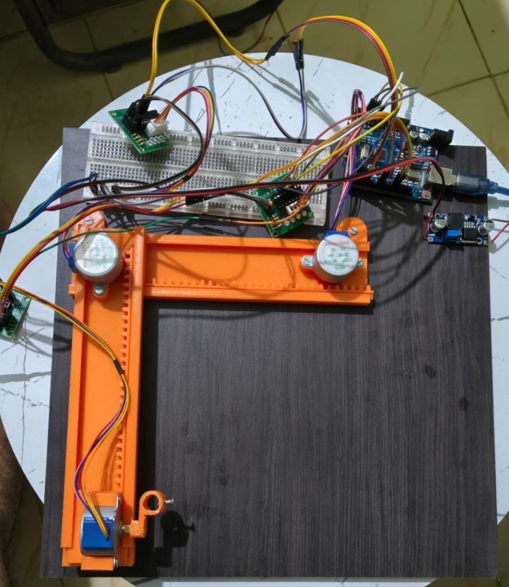

Project Overview
Designed and developed a compact 3-axis CNC plotter prototype using an Arduino Uno, three 28BYJ-48 stepper motors, and ULN2003AN driver modules. The complete mechanical structure was designed and fabricated using custom 3D-printed parts, providing controlled movement across the X, Y, and Z axes for automated drawing.
Unlike traditional repurposed assemblies with fixed geometric constraints, this second iteration is custom-engineered from the ground up. The custom 3D-printed chassis features integrated gear racks, rigid linear sliding tracks, precision motor mounts, and an adjustable pen carriage. This custom fabrication provides an expanded plotting envelope, rigid axis alignment, and full three-axis positional control.
Hardware Implementation
The Arduino Uno generates the required control signals for the three stepper motors. Each 28BYJ-48 motor is interfaced through an individual ULN2003AN driver, allowing the controller to independently control the three axes. The mechanical assembly was completely built using custom 3D-printed components.
| Component | Quantity | Function |
|---|---|---|
| Arduino Uno | 1 | Main controller for the CNC plotter; parses motion instructions and generates coordinated stepper pulse sequences. |
| ULN2003AN Driver | 3 | Drives the three stepper motors; provides Darlington transistor amplification for high-current coil excitation. |
| 28BYJ-48 Stepper Motor | 3 | Provides controlled, high-torque movement for the three axes (X-axis, Y-axis, and Z-axis pen positioning). |
| Custom 3D-Printed Parts | — | Mechanical frame and axis movement structure; includes integrated gear racks, guide tracks, and pen holder. |
3D-Printed Mechanical Design
Unlike the first CNC plotter prototype, this version uses a custom-designed 3D-printed mechanical structure rather than relying on a repurposed mechanical assembly. The printed components form the main frame and provide the mechanical support and guided movement required for the three-axis system.
Repurposed optical disc drive lead screws and sleds Restricted drawing area limited to ~40×40 mm DVD sled stroke 2-axis stepper control + SG90 micro servo pen lift Mechanical geometry constrained by pre-existing chassis
Custom 3D-printed linear gear racks and guided sliding rails Significantly expanded drawing envelope tailored to application Independent 3-axis stepper positioning (X, Y, and Z axes) Tailored structural rigidity, mounting slots, and pen holder clamp
Engineering Insight: By moving from salvaged optical components to CAD-modeled 3D-printed parts, every dimension, gear tooth pitch, and bearing tolerance was custom-optimized. The integrated gear rack directly engages the pinion on the 28BYJ-48 stepper shaft, translating rotational torque into linear motion without belt stretch or complex tensioners.
Working Principle & Software Workflow
The plotter converts a digital drawing into machine-readable G-code, which defines the required movement of the three axes. The Arduino-based controller interprets the motion commands and drives the corresponding stepper motors through the ULN2003AN drivers, producing precise mechanical movement of the plotting mechanism.
The three stepper motors provide three-axis positioning, while the custom 3D-printed mechanism translates the motor rotation into linear movement of the plotter.
G00 rapid transit, G01 linear drawing, Z-coordinate pen engagement) matching plotter feedrates.
Software Workflow Summary:
Digital Drawing → Vector Conversion → G-code Generation → G-code Control → Arduino Uno → ULN2003AN Drivers → 3-Axis Stepper Movement → Physical Drawing
Hardware Prototype Showcase
Detailed visual documentation of CNC Plotter Prototype 2 displaying the custom 3D-printed mechanical assembly, stepper motor mountings, drive electronics, and overall planar architecture.

